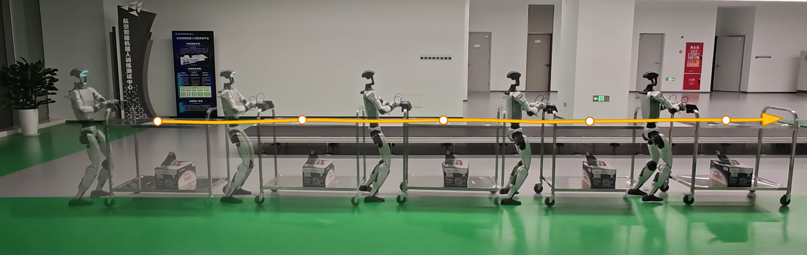
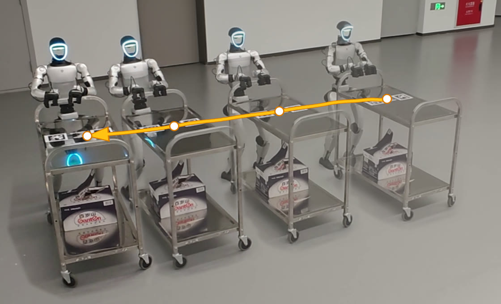
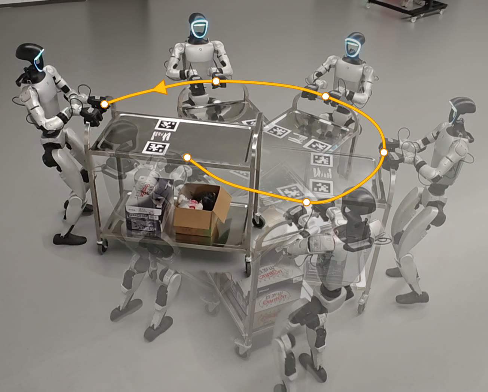
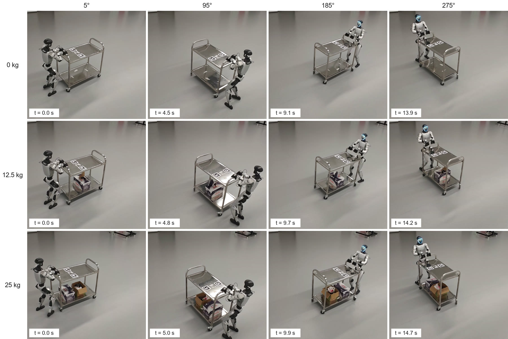
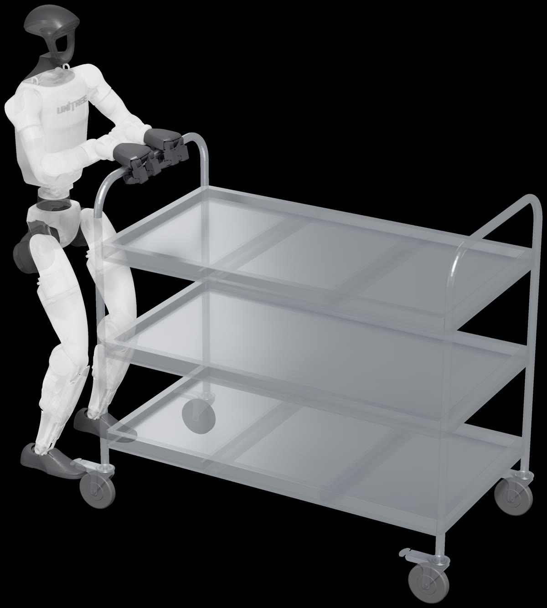

Abstract
When a humanoid robot pushes a cart, everything it does to the cart passes through its hands. Whether the cart moves, whether the hands slip on the handle, and how well a velocity command is tracked all depend on the interaction force, which in turn depends on grip friction, cart mass, rolling resistance and external disturbances—none of which can be measured on the real robot. We present ForPC, a hierarchical controller in which a high-level push-cart policy drives a frozen locomotion policy by correcting its velocity commands, offsetting upper-body joint targets and adding bounded leg residuals. We model the hand–handle contact with load-dependent elasto-plastic friction, derive force-aware rewards from this contact model, and train the policy with a teacher–student scheme whose latent context is restricted to what can be recovered from deployable history. Deployed on a Unitree G1 without force sensors, the policy tracks forward, lateral and turning commands with payloads of up to 25 kg and completes long-horizon delivery tasks.
Velocity Command Tracking
The policy tracks planar velocity commands — forward vx, lateral vy and turning ωz — with different payloads on the cart. Every run is recorded from two viewpoints.
Front view
Side view
vx = 0.3 m/s 2× speed

Front view
High-angle view
vy = 0.2 m/s to the left, empty cart 2× speed
Front view
High-angle view
vy = 0.2 m/s to the right, empty cart 2× speed
Front view
High-angle view
vy = 0.2 m/s to the left, 12.5 kg payload 2× speed
Front view
High-angle view
vy = 0.2 m/s to the right, 12.5 kg payload 2× speed

Front view
High-angle view
ωz = 0.4 rad/s, empty cart 2× speed
Front view
High-angle view
ωz = 0.4 rad/s, 12.5 kg payload 2× speed
Front view
High-angle view
ωz = 0.4 rad/s, 25 kg payload 2× speed


Trajectory Following
Following longer paths that combine forward motion and turning, recorded from a front and a side camera.
Front view
Side view
Trajectory 1 3× speed
Front view
Side view
Trajectory 2 3× speed
Front view
Side view
Trajectory 3 3× speed
Long-Horizon Delivery
Delivering a loaded cart across the lab over long and short routes.
Long route 1 4× speed
Long route 2 4× speed
Short route 3× speed
Method

ForPC is a two-level controller. A frozen HOMIE locomotion policy walks the robot, and a high-level push-cart policy running at 50 Hz corrects its velocity commands, offsets the 15 upper-body joint targets, and adds bounded residuals to the 12 leg joints.
- Hand–cart interaction model. Each hand holds the handle through a four-joint chain with load-dependent elasto-plastic friction along the tube, so grip slip and interaction forces are physically meaningful in simulation. Cart mass, rolling resistance, caster friction, yaw damping and impacts are randomized.
- Force-aware action and reward. With both hands on the handle, upper-body joint offsets act as impedance-style regulators of the interaction force, and the reward terms are derived from the contact mechanics.
- Teacher–student training. A teacher reads privileged mechanics through a 20-D latent bottleneck, regularized so that it keeps only what a student can recover from deployable history. The deployed student needs no force sensors and no privileged information.
BibTeX
@article{forpc2026,
title = {Paper Title Goes Here},
author = {First Author and Second Author and Third Author and Last Author},
journal = {Venue},
year = {2026}
}